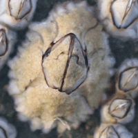
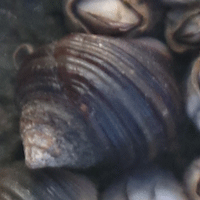
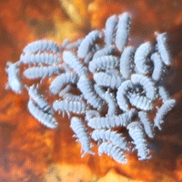

Life in the Intertidal Zone
- What is the intertidal zone?
- It's an area which is under water during high tide and above water during low tide.
- What might I see in Maine's intertidal zone?
- You likely will see barnacles, periwinkles, and seashore springtails.
| Photo | Name and Details |
|---|---|
|  |
|
|  |
|
|  |
|